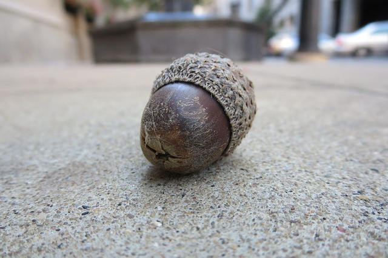

Coder-Farmer 碼農 (程式碼農夫)
暫時 : chia.hung.lin.bio@gmail.com資歷：
- 種子期 (2017.12~現在)：
- 三位農民:Pooh,HoKai,KJ Yang
- 發芽期 (2018.03~思考中)：
- 有作品與東西辣!!!
- 生長期 (~思考中)：
- 有東東!!!
- 花期 (~思考中)：
- 有西西!!!
- 果期 (~思考中)：
- 有東東有西西!!!
程式語言：

|

|
專案平台：
歷程：
果期
花期
生長期
發芽期
種子期
- 2017.12.20 第一次澆水
-
Git 學習，簡報資料(請點擊!)
目標:一起維護網站及coding紀錄版本!
下次目標:python基礎學習完成!
- 2017.12.4 已招募三位農民
-
目前學習 - Python